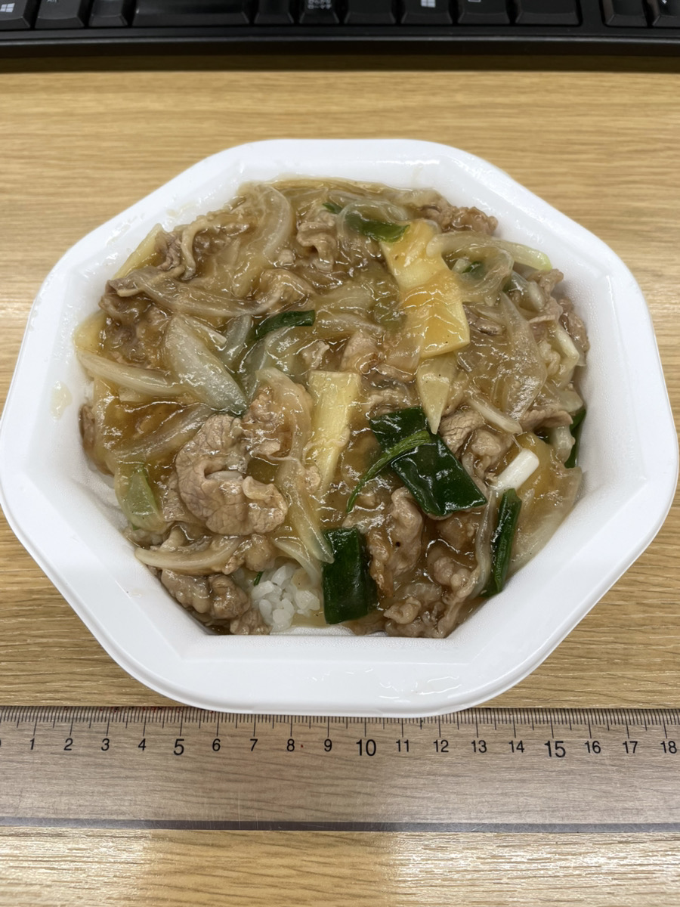

【牛肉丼】
飯店の牛肉丼は一般的な牛丼とは一味違う。
中華料理店らしい中華餡のかかった牛丼なのだ。

久々の牛肉丼を目の前にして
「なんか器の高さ低くなってない？」と
背後から声を上げたのは
隣の席のＯさんだった。
そう言われ､不審に思いながら定規で高さを測ったところ
3cmだった
が
「前が何cmだったかなんか誰もわからへんけどな~」と吐き捨てて
隣の席のＯさんは自席に戻った。
・
・
気を取り直して､実食！！
中華餡が絡んだ牛肉と玉ねぎとご飯を一気に口に運んだ。
そうそう！！この中華餡のとろとろした食感！！
最後に牛肉丼を食べたのはいつだったか思い出せないが
わずかな記憶を確かめながらこのとろとろ感を味わった。
中華餡が好きな人には是非お勧めしたい！！
しかし味は抜群に美味しいものの、
とろとろした中華餡に対して少し歯ごたえのある牛肉の舌触りが気になった。
また玉ねぎも半生で、個人的にもう少し炒めて甘い方が良かった。
私は生の玉ねぎが少々苦手なのだ。
・・
・
味も何だか少し物足りないと思ったが
牛肉丼にスパイスを振っている芳樹さんを横目に見ながら
空になった容器をゴミ箱に捨てた。
やはり何か物足りない。
そんな思いを胸に抱えたまま
帰宅して食レポを書いている最中に
ある食材が私の頭をかすめた。
そうだ！！きっとアレに違いない！！
いや､でも違っていたらどうしよう。
でも、私の記憶が正しければ
Ｋ・・・店さん！紅生姜を入れ忘れてやしませんか？
前は紅生姜が入っていたような気がするのは私だけでしょうか？